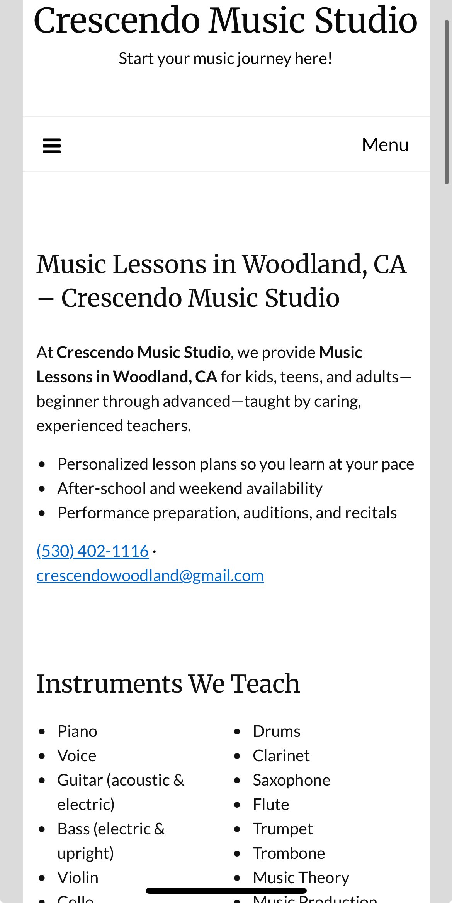

Crescendo Music Studio — WordPress Template & Local SEO
I designed and coded a simple, maintainable WordPress template, cleaned up the mobile experience, and set up a working contact funnel. I also configured domain redirects, stabilized hosting, and tuned page content/keywords so the site is visible and the owner can self-edit with confidence.
Screens


Overview
Problem
The site had been unreliable and down at times, mobile pages needed cleanup, and most new business was coming through word-of-mouth. Forms weren’t driving inquiries, and the owner needed something simple they could update.
Outcome
Stable WordPress install with a clean, editable template. Mobile traffic improved after layout fixes, the contact page now captures inquiries,
and a permanent .com → .net redirect consolidates traffic to the primary domain.
Responsibilities
- Coded a lightweight template/child theme with clear blocks/parts.
- Refactored mobile layouts, spacing, and tap targets.
- Built the contact page and connected delivery to the studio inbox.
- Configured domain/DNS so
.com301 redirects to.net. - Reworked page content and keywords for local intent.
- Stabilized the install and simplified the update path for the owner.
Approach
- Audit content, plugins, theme, and hosting settings; remove dead weight.
- Design a simple template with reusable blocks and readable defaults.
- Fix mobile CSS (flow, line length, headings, buttons, images).
- Stand up a clear contact flow with success/fail states and inbox routing.
- Map keywords to pages; clean headings/metadata and internal links.
- Set 301 redirects for
.com → .netand verify in Search Console.
SEO & Local Presence
- Local keyword research for Woodland / Davis / Yolo County queries.
- Focused page topics and on-page structure (titles, H1/H2, internal links).
- Advice on building presence: Google Business Profile, Facebook, Nextdoor, Yelp.
- Redirects in place and verified; monitoring coverage and queries in Search Console.
Owner now has a manageable template to keep content fresh without developer help.
Quality & Reliability
- Checked form delivery and anti-spam; added clear confirmations.
- Responsive checks across breakpoints; keyboard-friendly navigation.
- 404/redirect tests; sitemap submission and basic uptime monitoring.